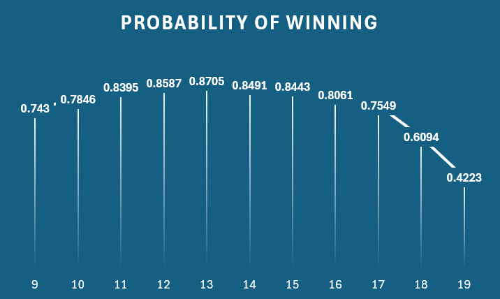

Over the summer, I made a mod for Minecraft Java, called MeatBaby (the theme was not my idea). In it, I followed tutorials and made custom blocks, items, recipes, textures, and 1 entity with a custom model.
It took almost 2 weeks with a lot of troubleshooting, and I will attempt to port it to a newer version in the near future.
Over the summer, I helped my dad with his networking project, where he installed 2 access points in some buildings connected to our central router. I helped him with the software side by renaming all the access points and routers to the same SSID and changed some IP settings, and helped troubleshoot some problems.
I made a project that involves finding the optimal hand to stand on in a game of BlackJack. I have completed the project, but I have not verified the accuracy of the program.
Because BlackJack "redefines" the Ace card, switching between 11 and 1, it makes handling odd cases tricky.
Because of the nature of the program, I need to be 100% sure that every case works with a shuffled deck and a simulated game.
Every draw needs to do exactly what it's supposed to and every if statement needs to work.
And because of the Ace problem, it took me a while, with lots of workarounds.
I used Python for this project.
Video analysis of my project: VIDEO
Using a variable called theBigVariable, I control what limit to stand on. So the number on the graph is the highest number to "hit". Everything *above* is stood on and no more cards are drawn.
Assuming the program accurately represents a game of blackjack, the program was then run 50000 times and a probability dividing wins by losses was given. It is shown on the graph above.
As we can see, the simulated best hand to stand on is 14 (13 is the highest number to hit on, the one on the graph).